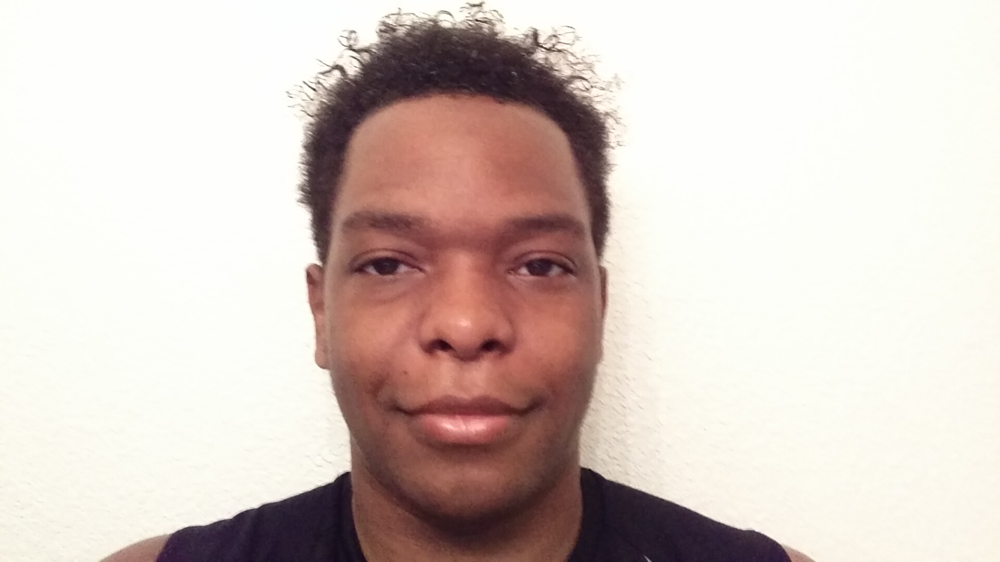

About Me

Hi, I'm Marcus Smith. I was born and raised in Houston, TX. I first got into programming and web development through online videos and tutorials and found out that it is something that I want to pursue. Ever since then I have been sharpening my skills, and taking on many projects that helped me improve my skills even more. Check out my portfolio to see if my style of development is suitable for you.
My interests are web development, self-improvement, listening to soul music from the 60s, 70s, and 80s and producing music, cooking (eating), astral projections, meditation, and exploring different places in life. Things a wish I could spend more time doing are yoga, exercise, staying awake, eating, and many more things.
Connect With Me